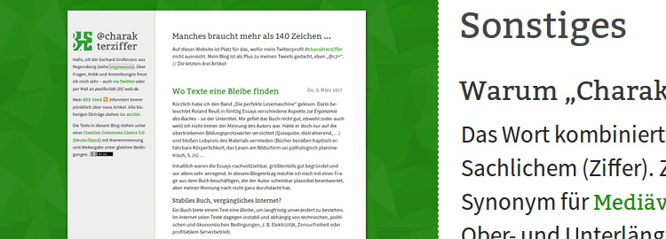
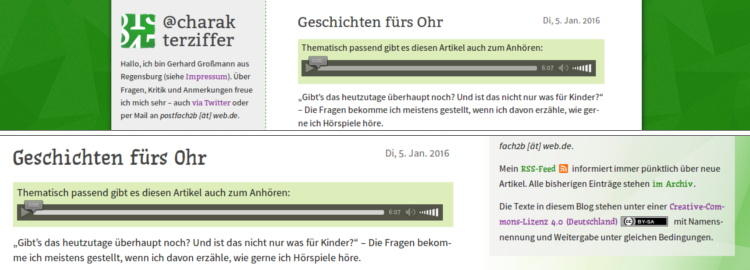

@charak
@charak@cz+ grafisch überarbeitet
Gut drei Jahre ist es her, dass mein kleines Blog hier ein neues Gewand bekommen hat. Und so langsam hatte ich mich daran satt gesehen: Zu dominanter Hintergrund, zu gewöhnliche Schriftmischung, irgendwie zu beengt. Gründe genug für eine Überarbeitung. Im Gegensatz zur letzten Umgestaltung hat sich technisch nicht viel verändert. Diesmal habe ich den Schwerpunkt auf die optische Erscheinung gelegt.
Das vorige Design ist mir mit der Zeit zu eng geworden. Mir gefällt der grüne Hintergrund noch immer sehr gut, zumal größere, farbkräftige Flächen im Internet eher ungewöhnlich sind. Zunehmend hatte ich aber den Eindruck, die grüne Fläche ist so stark, dass sie den Inhalt nicht nur rahmt, sondern regelrecht einsperrt und klein hält.

Raum für Texte
Ich wollte dem Text mehr Platz verschaffen. Deshalb habe ich als erstes die Schrift von 1 em (16px/12pt) auf 1,1 em (17,6px/13,2pt) vergrößert, so lässt es sich auch bequemer lesen. Folglich ergaben sich eine breitere Textspalte und ein größerer Zeilenabstand.
Ob ich die graue Randspalte erhalten soll, darüber war ich mir lange Zeit unschlüssig. Sie stört, wenn ich ein eher minimales Design haben möchte, das sich auf den eigentlichen Text fokussiert. Andererseits gefällt mir der einladende Kurztext und er dient auch der Navigation ins Archiv oder zum RSS-Feed. Also habe ich ihn als durchscheinenden Kasten auf die rechte Seite gesetzt. Wird das Browserfenster schmaler, verschwindet der Kasten nach unten und stattdessen erscheint rechts oben ein reduziertes Menü zu den wichtigsten Bereichen meines Blogs.
Eigenständiges Design
Wenn man Gestaltungselemente reduziert oder abschwächt, besteht leicht die Gefahr, dass sich eine Website grafisch wenig von anderen unterscheidet und im Einheitsbrei untergeht. Ich wollte die charakteristischen Merkmale zwar zurückhaltend einsetzen, sie im Gegenzug aber möglichst einzigartig gestalten. Neben meinem Logo oben links lasse ich deshalb die Farbe Grün als Streifen am rechten Rand wieder auftauchen. Ja, ich weiß, Triangle Patterns liegen jetzt schon seit über drei Jahren im Trend und werden ihren Zenit sicher bald überschritten haben. Trotzdem: Ich fand es einfach zu reizvoll, mir wie im vorigen Design ein kristallines Muster zu basteln. Die Besonderheit diesmal: Es besteht nicht aus einer Bilddatei, sondern wurde per CSS aus vier Farbverläufen zusammengesetzt.

Weitaus einmaliger ist die Schriftart, die ich nun für Überschriften und Links verwende. Ich wollte mich ja schon länger von der Bitter verabschieden, auch weil sie in Kombination mit meiner Textschrift Source Sans Pro dank eines populären WordPress-Themes recht verbreitet ist. Um mich von anderen Websites abzugrenzen, verwende ich nun die cz Slab, die ich selbst extra für dieses Blog gestaltet habe. Sie ist stark von Yanones genialer Antithesis inspiriert, ist dabei aber etwas schmaler, fetter, angepasster und hat eine geringere x-Höhe.
Vom neuen Design erhoffe ich mir, dass es großzügiger, offener und leichter wirkt als sein Vorgänger. Wem die jetzige Schrift übrigens zu groß sein sollte, der kann die Zoom-Funktion seines Browsers nutzen und den Text mit der Tastenkombination Strg + - verkleinern (zurücksetzen dann mit Strg + 0).